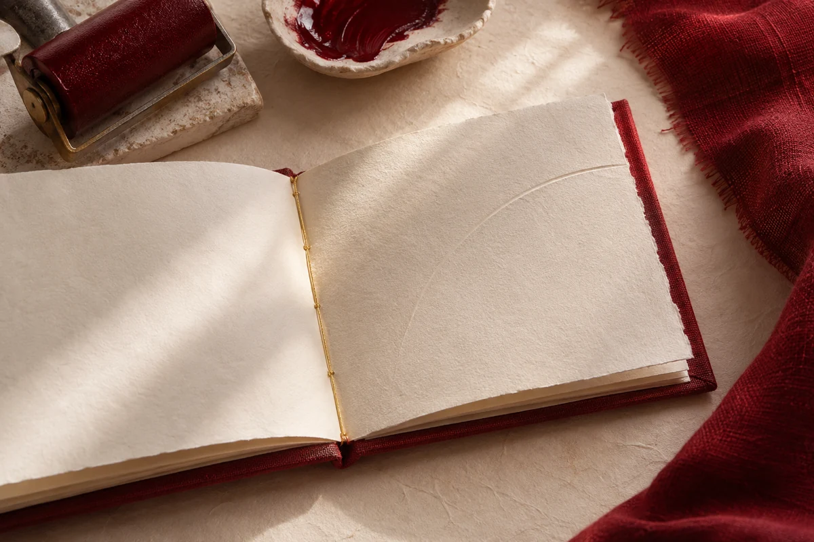
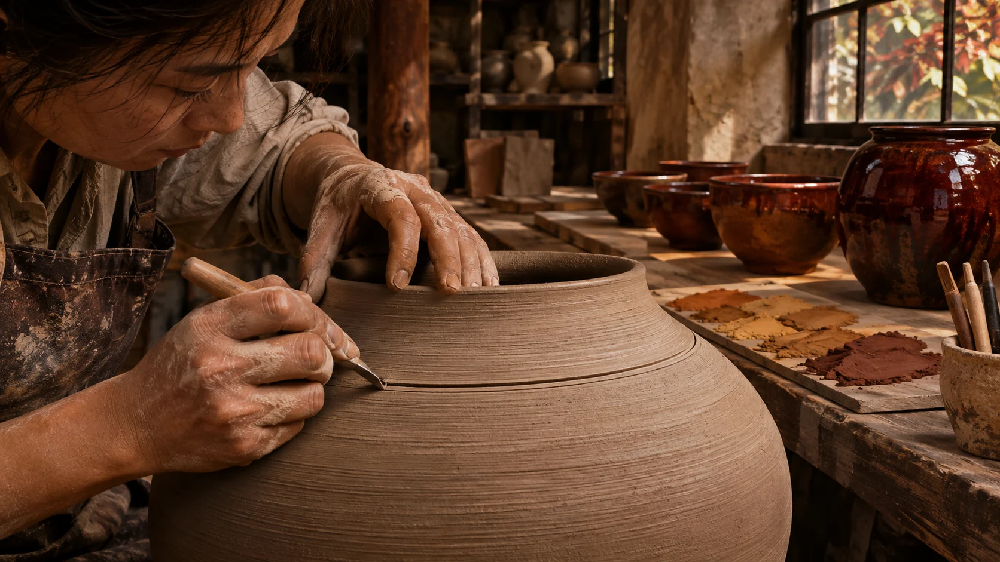
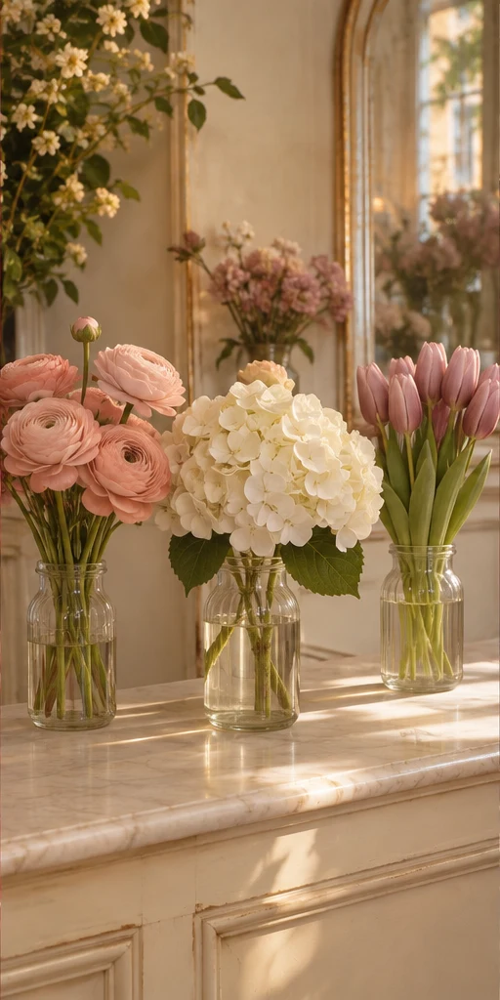
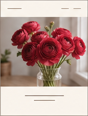
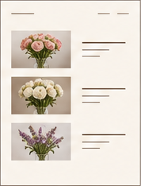
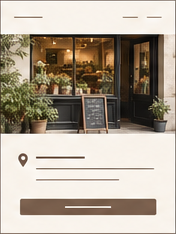
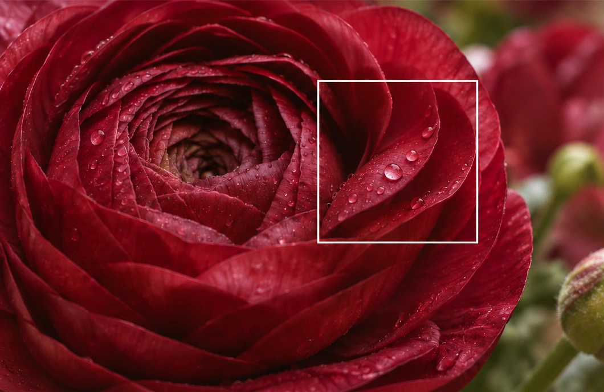
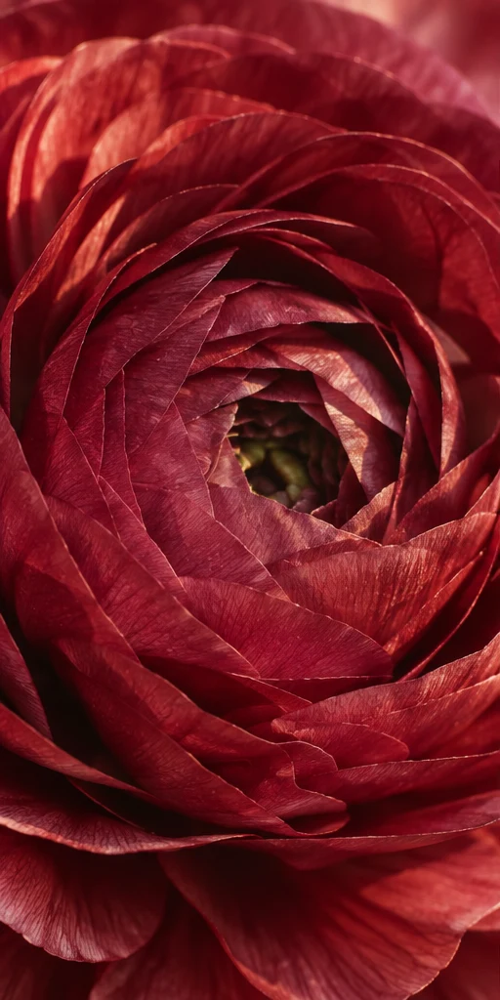
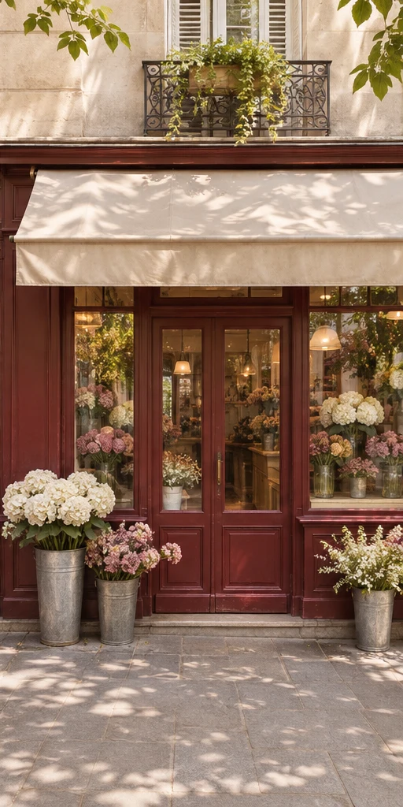
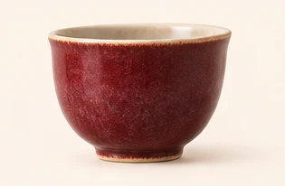

同一个页面，不同的目光
刚才首页上的那本书，你先看见了什么？
有人先看见朱红的布面。纸页底下只露出一圈窄边，那抹红却把整本书托了起来。

也有人沿着书脊看下去。金线隔一段就钻进纸里，翻开的书页就这样缝在一起。
审美为什么会变审美为什么会变
我们对美的感受，并不是一成不变的。生活的环境、接触的人、使用的工具，以及一个时代流行的表达方式，都会影响我们看待事物的眼光。同样是一个网页，初次看到时觉得新鲜的设计，见多了可能会觉得拥挤；曾经觉得普通的留白，也可能在某个时刻让人感到舒适。
变化的不只是外部环境，还有我们自己的需求。赶时间时，我们希望信息清楚、操作直接；想了解一个品牌或阅读一篇文章时，可能又期待画面有氛围，愿意放慢脚步。一个设计是否让人觉得美，往往和它出现在哪里、面对谁、帮助人做什么有关。
所以，审美不是给每个页面套用同一套固定的颜色或风格。它需要不断观察：人们身处怎样的情境，正在寻找什么，又会被什么细节打动。技术可以帮助我们尝试更多可能，而人的感受与选择，会让这些可能逐渐找到属于自己的方向。

为什么 AI 页面容易雷同
只告诉 AI「做得好看一点」，它就容易沿用熟悉的排法。看看下面三张首页：换了照片，还有哪里变了？
Taste Studio 怎样工作

同一份简报，可以先让人看见一朵花、一份花单，或一家店。这次，沿着花瓣特写往下看。
同一份简报，先让顾客看见什么？左右滑动，看看三种排法。




今日洋牡丹
今日洋牡丹 · 到店取花
今日 18:00 前
南街 12 号
演示完成，你已找到取花信息。
先点水珠对照细节，再试试「到店取花」
Taste Studio 怎样设计页面
你告诉 Taste Studio：「我想做个花店首页，让顾客挑花、到店取花」，它先画三种排法给你看。你指出喜欢哪一处，它就按你的反馈改下一稿。
点一张小图，看这版首页怎么排
这版把一朵洋牡丹放大，让顾客看清花瓣。花名和「取花」按钮紧挨着放在照片下方。
这版把三款花束排成清单。每行左边是照片，右边是花名和特点，顾客可以逐行比较。
这版先放店门照片，让来取花的人认得门。照片下面写着取花时间，再往下就是路线入口。

花瓣特写到店取花

- 认准门面
- 酒红色木门，米色遮阳篷
- 取花时段
- 今日 10:00–18:00
Taste Studio 怎样记录你的偏好
花店首页 · 手机端 · 第一张草图
- 店主原话
- “我喜欢第一张，能看清花瓣。”
- 设计师的理解
- 我理解，你想看清花瓣一层叠着一层的样子。
这条记录是这样留下的。
- 01
把原话和草图放在一起
在草图旁记下店主原话，另起一行写设计师的理解。
原话 · 能看清花瓣
理解 · 留下层叠细节 - 02
改完，请店主再看
打开手机上的下一稿，问店主：“喜欢的那几层花瓣，还看得清吗？”
这几层还看得清吗？ - 03
换个项目，先问再用
“上次你想看清花瓣。这次想看清杯子的釉纹，还是先看整只杯子？”等你确认，再决定怎么拍。

这次也想看釉纹吗？